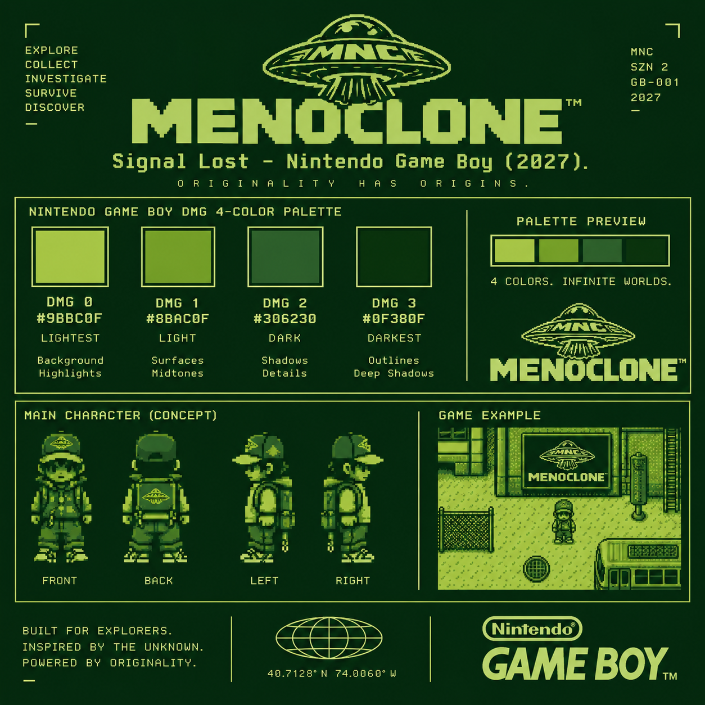

Explore
Roam interconnected city blocks, rooftops, tunnels, stores, skate spots, and strange signal zones.

MNC GAMING // SIGNAL LOST // 2027
ORIGINALITY HAS ORIGINS.
An exploration RPG built around lost transmissions, strange neighborhoods, hidden symbols, and the MENOCLONE UFO signal.
Use the Game Boy controls. D-Pad navigates, A selects, B goes back, and START launches the playable signal demo.
PROJECT TRANSMISSION
Roam interconnected city blocks, rooftops, tunnels, stores, skate spots, and strange signal zones.
Recover signal fragments, tags, tapes, clues, and MENOCLONE artifacts that unlock new routes and transmissions.
Talk to characters, inspect the environment, decode visual clues, and learn why the broadcast disappeared.
Navigate hazards and encounters while deciding which signals to follow — and which ones are traps.
DEVELOPMENT FILE // GB-001
The visual system is locked to the four-color Game Boy palette: #9BBC0F, #8BAC0F, #306230, and #0F380F. The experience is being built mobile-first, with the handheld itself acting as the primary navigation system.
IN DEVELOPMENT — TARGET 2027
